<!DOCTYPE html>
<html lang="en">

<head>
  <meta charset="utf-8" />
  <meta name="viewport" content="width=device-width, initial-scale=1.0, maximum-scale=1.0, user-scalable=no" />

  <title>Cross-Chain Message Passing (XCMP)</title>
  <link rel="shortcut icon" href="./../../../assets/favicon.ico" />
  <link rel="stylesheet" href="./../../../dist/reset.css" />
  <link rel="stylesheet" href="./../../../dist/reveal.css" />
  <link rel="stylesheet" href="./../../../assets/styles/PBA-theme.css" id="theme" />
  <link rel="stylesheet" href="./../../../css/highlight/shades-of-purple.css" />

  <link rel="stylesheet" href="./../../.././assets/styles/custom-classes.css" />

</head>

<body class="site">
  <header class="site-header">
    <!-- This logo is a link only on the watching server, not the production build -->
      
  </header>
  <main class="reveal">
    <article class="slides">
      <section  data-markdown><script type="text/template">

# XCMP: Cross Chain Message Passing
</script></section><section  data-markdown><script type="text/template">
## Revisiting Interoperability
</script></section><section  data-markdown><script type="text/template">
## Interoperability

> Interoperability is the ability for consensus systems to share data and value.
</script></section><section  data-markdown><script type="text/template">
## Superadditive Value

The interoperation of people and systems<br/>creates superadditive economic value.

> The whole is greater than the sum of the parts.
</script></section><section  data-markdown><script type="text/template">
## Interoperability & Specialization

Efficient economic systems create niches for specialization.

Different systems can exercise _comparative advantage_<br/>with others and focus on a single service or problem.
</script></section><section  data-markdown><script type="text/template">
## XCMP in Practice
</script></section><section  data-markdown><script type="text/template">
## XCMP vs XCM

XCMP is the data layer, while XCM is the language.

XCMP only focuses on the transmission of raw bytes between chains.<br/>
In this lesson we will focus only on XCMP.


<aside class="notes"><p>Communication requires a medium and a language to convey semantic meaning.
XCMP is the medium, like sound or writing, rather than the language.</p>
</aside></script></section><section  data-markdown><script type="text/template">
## Messaging Kinds


</script></section><section  data-markdown><script type="text/template">
## Revisiting PVFs and Outputs


</script></section><section  data-markdown><script type="text/template">
## Validation Inputs

```rust
/// Parameters provided to a PVF for validation
pub struct ValidationParams {
	/// The parent parachain block's Head Data
	pub parent_head: HeadData,
	/// The Proof-of-Validity.
	pub pov: PoV,
	/// The current relay-chain block number.
	pub relay_parent_number: RelayChainBlockNumber,
	/// The relay-chain block's storage root.
	pub relay_parent_storage_root: Hash,
}
```

Here, note that the `relay_parent_storage_root` allows us to handle **Merkle Proofs** of the Relay Chain state within the parachain.
</script></section><section  data-markdown><script type="text/template">
## Validation Outputs

```rust
/// Outputs of _successful_ validation of a parachain block.
pub struct ValidationResult {
	/// Upward messages sent by the Parachain.
	pub upward_messages: Vec<UpwardMessage>,
	/// Outbound horizontal messages sent by the parachain.
	pub horizontal_messages: Vec<OutboundHrmpMessage>,
	/// Number of downward messages that were processed by the Parachain.
	///
	/// It is expected that the Parachain processes them from first to last.
	pub processed_downward_messages: u32,
	/// The mark which specifies the block number up to which all inbound HRMP messages are processed.
	pub hrmp_watermark: RelayChainBlockNumber,

	// ... more fields
}
```

These fields of the result contain outgoing messages as well as records of incoming messages processed.

<aside class="notes"><p>All validation results are posted on-chain during the Backing phase and are processed upon Availability/Inclusion.</p>
<p>There are some requirements on the outputs for the candidate to be accepted on-chain.
One constraint is that the candidate does not send too many messages, and the other constraint is that the candidate processes a few of the pending messages awaiting it.</p>
</aside></script></section><section  data-markdown><script type="text/template">
## Host Configuration

```rust
pub struct HostConfiguration {
  // ... many many fields
}
```

The `Configuration` pallet of the Relay Chain State stores a configuration object which can be altered by governance.
It only officially changes at session boundaries.

Challenge: Read the `activeConfig()` of the `configuration` pallet in Polkadot-JS Apps.
</script></section><section  data-markdown><script type="text/template">
## Upward Message Passing (UMP)

UMP is the mechanism by which messages are passed from parachains to the Relay Chain.

Every parachain block has the ability to post a limited amount of messages to the Relay Chain, which will then be processed as XCM.
</script></section><section  data-markdown><script type="text/template">
## UMP Pallet

The Relay Chain Runtime has a UMP Pallet with this storage:

```rust
	/// The messages waiting to be handled by the relay-chain originating from a certain parachain.
	///
	/// The messages are processed in FIFO order.
	#[pallet::storage]
	pub type RelayDispatchQueues<T: Config> =
		StorageMap<_, Twox64Concat, ParaId, Vec<UpwardMessage>, ValueQuery>;
```

Some amount of weight every block is devoted to processing upward messages and draining the queues.

<aside class="notes"><p><a href="https://github.com/paritytech/polkadot/blob/220383768b39d422ace5fc8e1f258cebec86e5eb/runtime/parachains/src/ump.rs">https://github.com/paritytech/polkadot/blob/220383768b39d422ace5fc8e1f258cebec86e5eb/runtime/parachains/src/ump.rs</a></p>
</aside></script></section><section  data-markdown><script type="text/template">
## Upward Message Passing (UMP)

```rust
/// All upward messages coming from parachains will
/// be funneled into an implementation of this trait.
pub trait UmpSink {
	/// Process an incoming upward message and return the amount
	/// of weight it consumed, or `None` if it did not begin processing
	/// a message since it would otherwise exceed `max_weight`.
	///
	/// See the trait docs for more details.
	fn process_upward_message(
		origin: ParaId,
		msg: &[u8],
		max_weight: Weight,
	) -> Result<Weight, (MessageId, Weight)>;
}
```

In practice, this is configured to be an XCM Executor.
For now, the main takeaway is that it allows parachains to execute `Call`s on the Relay Chain.
</script></section><section  data-markdown><script type="text/template">
## Parachain Origins

```rust
// Act as a regular account with a deterministic ID based
// on the Para ID.
Origin::Signed(AccountId),
// Act as the parachain itself, for calls which may be made by parachains.
Origin::Parachain(ParaId),
```

When parachains execute `Call`s on the Relay Chain, they have access to two origin kinds.

Note that this is only the case for the Relay Chain and parachains messages may be interpreted differently on other chains.
</script></section><section  data-markdown><script type="text/template">
## UMP Configuration

```rust
pub struct HostConfiguration {
	/// Total number of individual messages allowed in the
	/// parachain -> relay-chain message queue.
	pub max_upward_queue_count: u32,
	/// Total size of messages allowed in the
	/// parachain -> relay-chain message queue before which
	/// no further messages may be added to it. If it
	/// exceeds this then the queue may contain only
	/// a single message.
	pub max_upward_queue_size: u32,
	/// The maximum size of an upward message that can be sent by a candidate.
	///
	/// This parameter affects the size upper bound of the `CandidateCommitments`.
	pub max_upward_message_size: u32,
	/// The maximum number of messages that a candidate can contain.
	///
	/// This parameter affects the size upper bound of the `CandidateCommitments`.
	pub max_upward_message_num_per_candidate: u32,
	// ... more fields
}
```
</script></section><section  data-markdown><script type="text/template">
## Validation Outputs for UMP

```rust
/// Outputs of _successful_ validation of a parachain block.
pub struct ValidationResult {
	/// Upward messages sent by the Parachain.
	pub upward_messages: Vec<UpwardMessage>,
	// ... more fields
}
```
</script></section><section  data-markdown><script type="text/template">
## Message Queue Chains (MQC)

Let's take a small detour into a data structure used in DMP and XCMP.

Problem: Parachains should be able to cheaply determine the state of the entire message queue.

Problem: Relay Chain state proofs are expensive and should be minimized.

Solution: Message Queue Chains (MQC)
</script></section><section  data-markdown><script type="text/template">
## MQC Architecture


</script></section><section  data-markdown><script type="text/template">
## Benefits of MQCs

<pba-flex center>

1. Parachains only need to learn the most recent MQC Head to implicitly learn about all queued messages
1. MQC entries are small (~70 bytes)
1. MQCs can be backfilled and then processed forward with no further relay chain interaction

</pba-flex>
</script></section><section  data-markdown><script type="text/template">
## Downward Message Passing (DMP)

DMP at a high level is Relay Chain to Parachain messaging.

The Relay Chain manages a queue of messages to each parachain, which are processed as the parachain produces blocks.
</script></section><section  data-markdown><script type="text/template">
## DMP Pallet

The Relay Chain Runtime has a DMP pallet which manages

```rust
	/// The downward messages addressed for a certain para.
	#[pallet::storage]
	pub(crate) type DownwardMessageQueues<T: Config> = StorageMap<
		_,
		Twox64Concat,
		ParaId,
		Vec<InboundDownwardMessage<T::BlockNumber>>,
		ValueQuery,
	>;

	/// A mapping that stores the downward message queue MQC head for each para.
	#[pallet::storage]
	pub(crate) type DownwardMessageQueueHeads<T: Config> =
		StorageMap<_, Twox64Concat, ParaId, Hash, ValueQuery>;
```
</script></section><section  data-markdown><script type="text/template">
## DMP Configuration

```rust
pub struct HostConfiguration {
	/// The maximum size of a message that can be put in a downward message queue.
	pub max_downward_message_size: u32,
}
```
</script></section><section  data-markdown><script type="text/template">
## Validation Outputs for DMP

```rust
/// Outputs of _successful_ validation of a parachain block.
pub struct ValidationResult {
	/// Number of downward messages that were processed by the Parachain.
	///
	/// It is expected that the Parachain processes them from first to last.
	pub processed_downward_messages: u32,
	// ... more fields
}
```

Each parachain informs the relay chain of the number of processed downwards messages every parablock.
There is a required minimum when the queue is large.

<aside class="notes"><p>Parachains can &quot;process&quot; messages simply by ignoring them.
The Relay Chain doesn&#39;t care what parachains do with the messages.
They can just be thrown out.</p>
</aside></script></section><section  data-markdown><script type="text/template">
## XCMP-Lite / HRMP: Horizontal Message Passing

XCMP is the family of protocols by which parachains can transmit messages to each other.

In the planned Full XCMP, only the hashes of messages are posted to the Relay Chain.
In XCMP-Lite, the full messages are posted to the Relay Chain.
</script></section><section  data-markdown><script type="text/template">
## Validation Outputs for XCMP-Lite

```rust
/// Outputs of _successful_ validation of a parachain block.
pub struct ValidationResult {
	/// Outbound horizontal messages sent by the parachain.
	pub horizontal_messages: Vec<OutboundHrmpMessage>,
	/// The mark which specifies the block number up
	/// to which all inbound HRMP messages are processed.
	pub hrmp_watermark: RelayChainBlockNumber,

	// ... more fields
}

pub struct OutboundHrmpMessage {
	/// The para that will get this message in its downward message queue.
	pub recipient: ParaId,
	/// The message payload.
	pub data: sp_std::vec::Vec<u8>,
}

```
</script></section><section  data-markdown><script type="text/template">
## XCMP Channels

In order to communicate with each other over XCMP, Parachains must open channels to each other.

Channels are one-way, and for two-way communication two channels must be opened.
</script></section><section  data-markdown><script type="text/template">
## XCMP Channels

The protocol for opening a channel is as follows:

<pba-flex center>

1. Chain A sends an upward message requesting a channel to Chain B
1. Chain B receives a downward message notifying of the channel request
1. Chain B sends an upward message accepting or rejecting the channel
1. The channel is either opened or rejected in the Relay Chain as a result

</pba-flex>
</script></section><section  data-markdown><script type="text/template">
## XCMP Channels and Deposits

There are no fees for XCMP messages, but every channel comes with a `max_capacity` and `max_message_size`.

Each channel comes with a corresponding _deposit_ of DOT tokens to pay for the relay chain state utilization.
</script></section><section  data-markdown><script type="text/template">
## XCMP-Lite / HRMP Channel Open Protocol


</script></section><section  data-markdown><script type="text/template">
## HRMP Pallet: MQCs

Every open channel causes the HRMP pallet in the Relay Chain Runtime to manage an MQC for messages from the sender to the receiver.

Note that channels are one-way. Each channel comes with storage requirements, so a deposit is required from each side to collateralize the storage.
</script></section><section  data-markdown><script type="text/template">
## XCMP Configuration by Governance

```rust
pub struct HostConfiguration {
	/// Maximum outbound channels
	pub hrmp_max_parachain_outbound_channels: u32,
	pub hrmp_max_parathread_outbound_channels: u32,
	/// Required deposits from each side of the channel
	pub hrmp_sender_deposit: Balance,
	pub hrmp_recipient_deposit: Balance,
	/// Maximum capacity per channel, measured in messages.
	pub hrmp_channel_max_capacity: u32,
	/// Maximum capacity per channel, measured in bytes.
	pub hrmp_channel_max_total_size: u32,
	/// Maximum inbound channels allowed
	pub hrmp_max_parachain_inbound_channels: u32,
	pub hrmp_max_parathread_inbound_channels: u32,
	/// Maximum size per message in the channel, in bytes.
	pub hrmp_channel_max_message_size: u32,

  // more fields...
}
```
</script></section><section  data-markdown><script type="text/template">
## The `hrmp_watermark` field

Parachains include an `hrmp_watermark` in their `ValidationResult` indicating a relay-chain block number.

This block number tells the relay chain state that the parachain has processed all messages from all inbound channels with `sent_at <= hrmp_watermark`

Legal values for `hrmp_watermark` are either the relay-parent number from the `ValidatiomParams` _or_ a block number where a message was enqueued into an inbound MQC.
</script></section><section  data-markdown><script type="text/template">
## Learning about downward and inbound HRMP messages

<pba-flex center>

1. The `ValidationParams` includes a `relay_parent_storage_root`.
1. The Relay Chain state contains UMP and HRMP pallets with MQCs in the storage.
1. Collators put state proofs into the parachain block, allowing the runtime to verifiably read parts of the Relay Chain state.
1. By doing so, the parachain runtime reads information about inbound messages from the relay chain.

</pba-flex>
</script></section><section  data-markdown><script type="text/template">
## Using Messaging in Practice

This lesson is meant to communicate the underlying protocols and mechanics by which messages are sent and received.

In practice, using these mechanisms in a parachain with Cumulus is simple and is abstracted by Cumulus pallets & XCM utilities, covered in the next lessons.
</script></section><section  data-markdown><script type="text/template">
<!-- .slide: data-background-color="#4A2439" -->

# Questions
</script></section>
    </article>
  </main>

  <script src="./../../../dist/reveal.js"></script>

  <script src="./../../../plugin/markdown/markdown.js"></script>
  <script src="./../../../plugin/highlight/highlight.js"></script>
  <script src="./../../../plugin/zoom/zoom.js"></script>
  <script src="./../../../plugin/notes/notes.js"></script>
  <script src="./../../../plugin/math/math.js"></script>
  <script>
    function extend() {
      var target = {};
      for (var i = 0; i < arguments.length; i++) {
        var source = arguments[i];
        for (var key in source) {
          if (source.hasOwnProperty(key)) {
            target[key] = source[key];
          }
        }
      }
      return target;
    }

    // default options to init reveal.js
    var defaultOptions = {
      controls: true,
      progress: true,
      history: true,
      center: true,
      transition: 'default', // none/fade/slide/convex/concave/zoom
      slideNumber: true,
      plugins: [
        RevealMarkdown,
        RevealHighlight,
        RevealZoom,
        RevealNotes,
        RevealMath
      ]
    };

    // options from URL query string
    var queryOptions = Reveal().getQueryHash() || {};

    var options = extend(defaultOptions, {"width":1400,"height":900,"margin":0,"minScale":0.2,"maxScale":2,"transition":"none","controls":true,"progress":true,"center":true,"slideNumber":true,"backgroundTransition":"fade"}, queryOptions);
  </script>


  <script>
    Reveal.initialize(options);
  </script>
</body>

</html>
